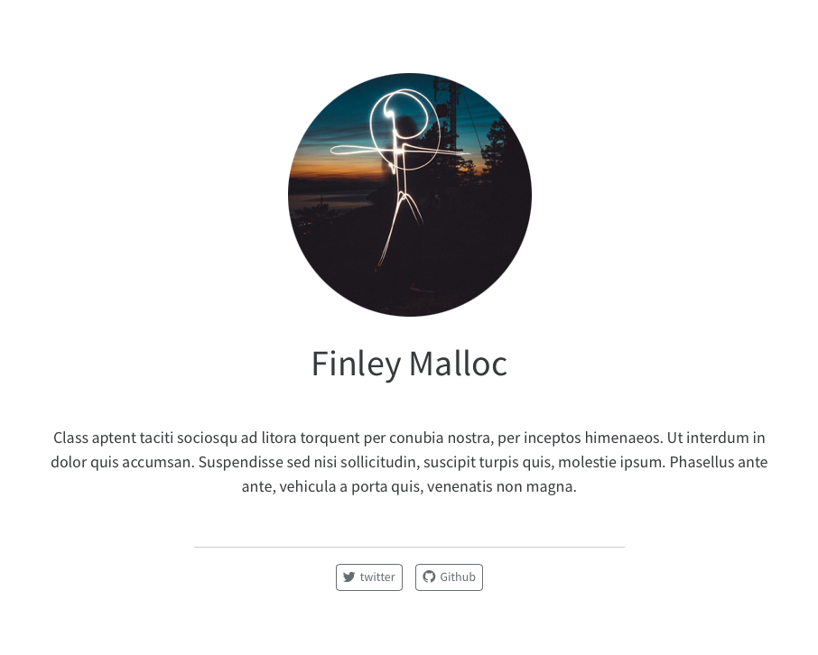
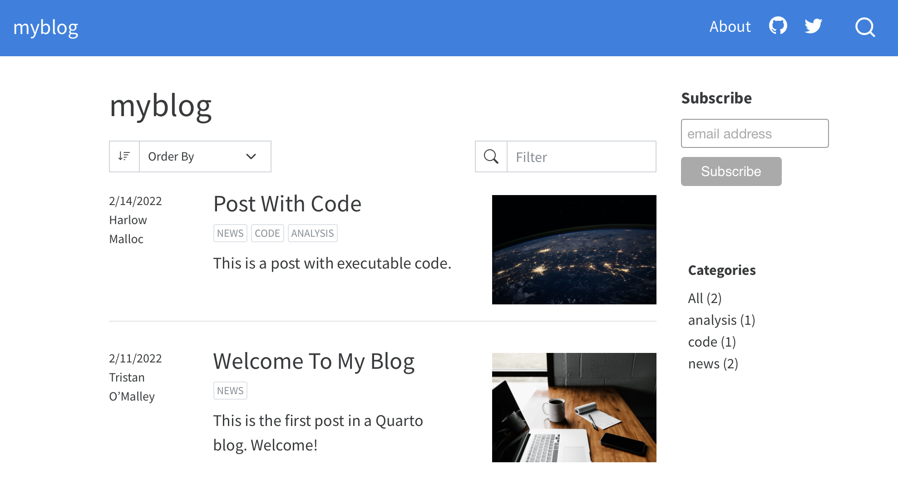

Creating a Blog
Create a blog by authoring a collection of posts and then dedicating a page (usually the website homepage) to a listing of all of your posts.
Overview
Quarto websites include integrated support for blogging. Blogs consist of a collection of posts along with a navigational page that lists them in reverse chronological order. Blogs can include a custom about page, publish an RSS feed, and use a wide variety of themes.
You can create websites that consist entirely of a single blog, websites that have multiple blogs, or you can add a blog to a website that contains other content.
Blog Projects
To create a new blog, use the quarto create-project command with --type website:blog. For example, to create a blog within the directory myblog you would do this:
quarto create-project myblog --type website:blogThis will result in the directory myblog being populated with a website that serves a single blog:
Creating project at myblog:
- Created _quarto.yml
- Created index.qmd
- Created posts/welcome/index.qmd
- Created posts/post-with-code/index.qmd
- Created about.qmd
- Created styles.css
- Created posts/_metadata.ymlIf you are using RStudio, you can alternatively use the New Project command to create a Quarto Blog. Note that this feature is only available in the preview release of RStudio.
Here’s a summary of the key files created within the project:
| File | Description |
|---|---|
_quarto.yml |
Quarto project file. |
index.qmd |
Blog home page. |
about.qmd |
Blog about page. |
posts/ |
Directory containing posts |
posts/_metadata.yml |
Shared options for posts |
styles.css |
Custom CSS for website |
Let’s take a closer look at the various components of the project.
Home Page
The home page is a listing page for all of the documents in the posts directory:

Here’s the source code for the home page:
---
title: "myblog"
listing:
contents: posts
sort: "date desc"
type: default
categories: true
---When you render a new post, the listing page will automatically updated, adding the most recent post to the top of the list. See the article on Listing Pages to learn more about customizing listings, including use a grid layout rather than the default shown above.
Categories
The listing page is configured to enable categories, which display in the right margin of the page:
---
title: "myblog"
listing:
# (additional metadata excluded for brevity)
categories: true
---The categories are read from the front matter of documents included in the listing. For example, here is sample post metadata that includes categories:
---
title: "Post With Code"
description: "Post description"
author: "Fizz McPhee"
date: "May 22nd, 2021"
categories:
- news
- code
- analysis
---See the article on Categories to learn more.
About Page
The about.qmd document includes additional information on the blog and its author. For example:

Here’s what the source code of an about.qmd might look like:
---
title: "About"
image: profile.jpg
about:
template: jolla
links:
- icon: twitter
text: Twitter
href: https://twitter.com
# (additional links excluded for brevity)
---
## About this blog
This is the contents of the about page for my blog.See the article on About Pages to learn about the various options available for customizing page output.
Posts Directory
The posts that make up the contents of the blog are located in the posts directory.
Add a new post to your blog by creating a sub-directory within posts, and adding an index.qmd file to the directory. That qmd file is the new blog post and when you render that, the blog home page will automatically update to include the newest post at the top of the listing.
Drafts
Add draft: true to the document options if you’d like a post to not be included in the listing, site map, or site search. For example:
---
title: "My Post"
description: "Post description"
author: "Fizz McPhee"
date: "May 22nd, 2021"
draft: true
---To publish the post when it is complete, simply remove draft: true from the document options and then render it.
Freezing Posts
Blogs posts that contain executable code often have the problem that posts created last year can’t be rendered this year (for example, because the packages used by the post have changed). A similar problem can also arise when a blog has multiple contributors and not everyone has the right software (or the right versions) to render all of the posts. Finally, posts that include computations can often take a while to render, and you don’t want the cumulative time required to render the site to grow too large.
The solution to these problems is to freeze the output of computational blog posts. When a post is rendered with freeze: true, the markdown output from the the underlying engine (e.g. Jupyter or Knitr) is saved. When the entire site is rendered these computations are not re-run, but rather read from the previously frozen results.
The only time an article with freeze: true is rendered is when you explicitly re-render it. By specifying this option for blog posts you can ensure that posts rendered now will always re-render well with the rest of the site, even if the software required to originally render them isn’t available.
In the default blog we include a file (_metadata.yml) that establishes shared metadata for all documents within the posts directory. In this file, we specify that we want freeze: true set by default for all posts:
# options apply to all posts in this folder
# freeze computational output
freeze: trueSee the article on the freeze option to learn more about freezing computational output within websites.
Themes
Blogs can use any of the 25 Bootswatch themes included with Quarto. You can also create your own themes. The default blog generated by quarto create-project uses the cosmo theme. Here are links to the available themes along with thumbnails of what the simple default blog looks like under a few of them:
RSS Feed
Blogs typically include an RSS feed that allows their content to be easily syndicated to feed readers and other websites. You can enable RSS for a blog by doing the following:
In the
quarto.ymlfile, add asite-urlanddescriptionto thewebsitekey (without these options being set in the project file, Quarto cannot generated a feed). For example:website: title: "myblog" site-url: https://www.myblogexample.io description: "A great sample blog"In your blog home page
index.qmdadd thefeed: trueoption to the listing. For example:--- title: "myblog" listing: contents: posts sort: "date desc" type: default categories: true feed: true ---
Now, when your site is rendered, an RSS feed will also be generated. To learn more, see the article on RSS Feeds.
You can add an RSS link to your navbar by including the following in your _quarto.yml project file. For example:
website:
title: "myblog"
site-url: https://www.myblogexample.io
description: "A great sample blog"
navbar:
right:
- icon: rss
href: index.xmlPublishing
There are a wide variety of ways to publish Quarto blogs. Blog content is by default written to the _site sub-directory. Publishing is simply a matter of copying this directory to a web server or web hosting service.
The article on Publishing Websites describes in more detail how to publish to the following services:
Subscriptions
You may want to allow readers of your blog to subscribe to updates via email. You can use a third party email service to manage and send these emails.
Third party email services will typically take your RSS Feed as input (e.g. https://https://www.myblogexample.io/index.xml) and provide HTML for a subscription widget that you can place on your blog. A good place to locate that widget is often right margin of your blog.
Here are the steps required to add a subscription widget:
Use your email service features to generate the HTML for your subscription widget. MailChimp, for example, provides HTML like this for a minimal subscription widget.
<span style="font-weight: 600;">Subscribe</span> <!-- Begin Mailchimp Signup Form --> <link href="http://cdn-images.mailchimp.com/embedcode/slim-10_7_dtp.css" rel="stylesheet" type="text/css"> <style type="text/css"> #mc_embed_signup{background:#fff; clear:left; font:14px Helvetica,Arial,sans-serif; width:170px;} /* Add your own Mailchimp form style overrides in your site stylesheet or in this style block. We recommend moving this block and the preceding CSS link to the HEAD of your HTML file. */ #mc-embedded-subscribe-form{margin-left:-5px;} </style> <div id="mc_embed_signup"> <form action="<site_url>" method="post" id="mc-embedded-subscribe-form" name="mc-embedded-subscribe-form" class="validate" target="_blank" novalidate> <div id="mc_embed_signup_scroll"> <input type="email" value="" name="EMAIL" class="email" id="mce-EMAIL" placeholder="email address" required> <!-- real people should not fill this in and expect good things - do not remove this or risk form bot signups--> <div style="position: absolute; left: -5000px;" aria-hidden="true"><input type="text" name="b_f718424fc5df77c22533bdaa6_a3c37fb57b" tabindex="-1" value=""></div> <div class="optionalParent"> <div class="clear foot" style="margin-top: 10px;"> <input type="submit" value="Subscribe" name="subscribe" id="mc-embedded-subscribe" class="button"> <p class="brandingLogo"></p> </div> </div> </div> </form> </div> <!--End mc_embed_signup-->WarningThe above widget HTML will not work in your blog as the subscription HTML needs to contain value specific to your blog. See your email service provider’s instructions for generating a subscription widget.
Create the file
subscribe.htmlin the root of your project.Paste the HTML for your subscription widget into
subscribe.htmland save the file.Add
subscribe.htmlto themargin-headerin your_quarto.ymlfile:website: # (additional metadata excluded for brevity) margin-header: subscribe.html
The result looks like this:
